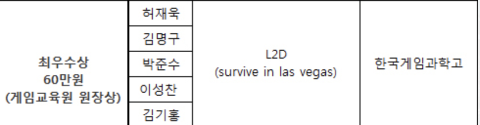

❓이성찬❓
1997년 04년 24일생 이성찬 입니다😎전라북도 정읍에서 출생했고, 고향은 전라북도 고창입니다.
고등학생이 될때 기숙사를 들어가게 되어, 17년째 나와서 살고있습니다.
현재는 (주)이엔티 회사에 입사하여 전주 금암동에 거주하고 있습니다✌️

❓학력❓
- 고창초등학교 6년
- 고창남중학교 3년
- 한국게임과학고등학교 3년
- 군필 - 35사단 행정병
- 원광대학교 - 컴퓨터소프트웨어공학과
❓해왔던거❓
cocos2d(C++기반)
UnityEngine(C#기반)
👏원광대학교 3학년 4학년 캡스톤디자인 유니티로 게임제작

Swift(ios앱개발)
👏즐겨하는 게임 관련 정보를 담은 어플출시를 예정했음
❓당장 공부할거❓
- 웹 공부 html, css를 이용해서 정적 html 문서를 만들고,
- Material-UI 개념
- React.js 공부
- flux의 개념 : store
- Virtual dom 개념
- 컴포넌트 사용하기 html 문법과 css 문법을 알고 있어야 함
- Rest API 개념 서버와 통신을 하면서 동적 html 문서를 react.js로 구현
- node.js(콜백) + typescript로 공부 -클래스를 정의할 수 있다(객체지향언어)
- Graphql 개념
nginx 웹서버 사용법을 익히고, 여기에 문서를 서비스하는 방법을 익힌다.
-형정의가 최우선
-콜백을 처리하기 위함